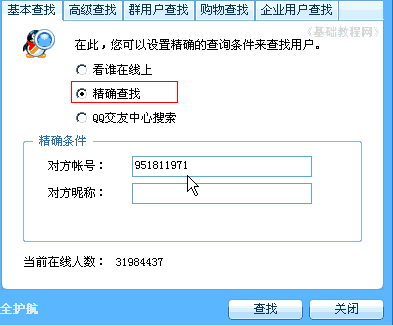
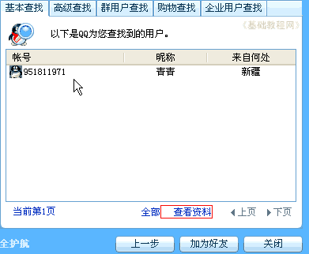
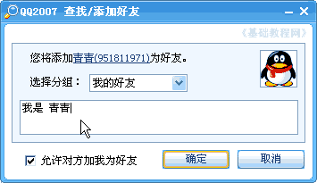
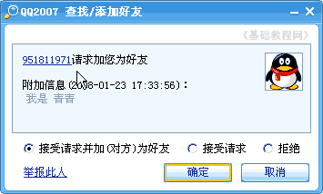
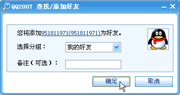
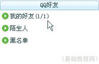

QQ聊天操作基础
四、添加好友 返回目录
刚申请了QQ号的时候，面板里面只有自己一个人，接下来就是往里面加入好友，下面我们来看一个练习；
1、登录QQ
1）双击桌面的QQ图标运行程序，出来一个登录面板，如果自动运行就不用点桌面图标了；

2）按照从上到下的顺序，输入申请的QQ号，在第二行输入密码，如果是公用的机子，可以点击旁边的小键盘来输入，这个比较安全些；

3）下面的自动登录和隐身登录可以先不勾，点击“登录”按钮，登录成功以后就可以显示出QQ面板来；

2、添加好友
1）在面板最下边，有一个放大镜“查找”按钮，点击这个查找按钮，先进行一下查找；
2）在出来查找/添加面板里，找到中间的对方帐号栏里，输入对方的QQ号码，然后点下面的“查找”按钮，
如果是找其他人，就点上边的“高级查找”，根据条件进行查找；

3）接下来出来一个查找结果，里面有一个找到的用户，看一下他的QQ号码和昵称，确定一下是不是自己找的人，

也可以点下面的“查看资料”，看一下他的详细介绍，如果确定了，就点下边的“加为好友”；
4）然后出来一个验证对话框，在中间输入自己的添加理由，也就是让对方知道是你，或者让他同意加你为好友；

5）点“确定”以后，对方如果在线，QQ图标上就会出来一闪一闪的小喇叭 ，还有咳嗽的提示音，
，还有咳嗽的提示音，
点击小喇叭，就会看到发送的添加好友请求，点击上面的QQ号，可以查看一下他的详细资料；

6）点确定按钮以后，出来一个分组，这儿直接点“确定”，完成添加好友；

7）添加成功以后，在QQ面板里“我的好友”组里就有了一个好友，后面的(1/1)表示组里有一个好友，1个在线，

点击前面的绿色小圆按钮，也可以看看是谁在线上，两人都在线上，就可以进行聊天了；
本节学习了添加好友的基本方法，如果你成功地完成了练习，请继续学习下一课内容；
本教程由86团学校TeliuTe制作|著作权所有
基础教程网：http://teliute.org/
美丽的校园……
转载和引用本站内容，请保留版权信息和本站链接。